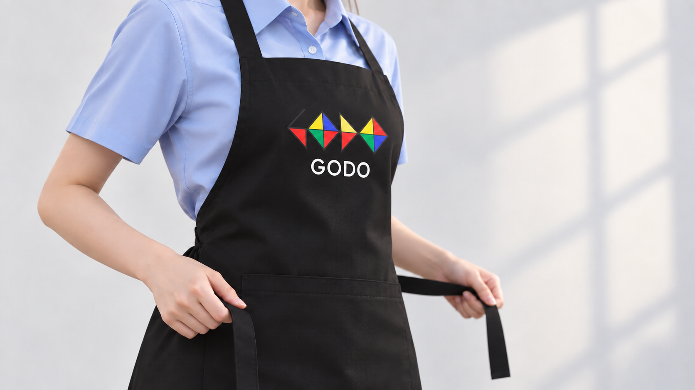
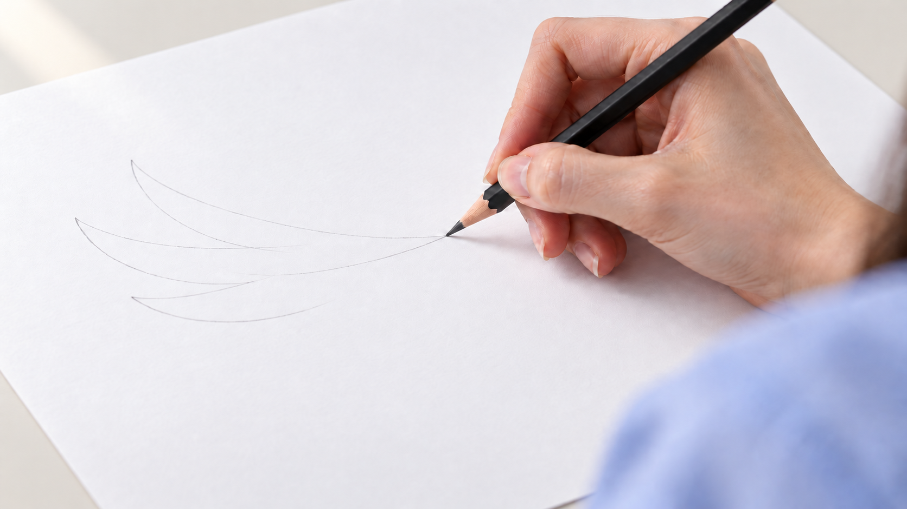
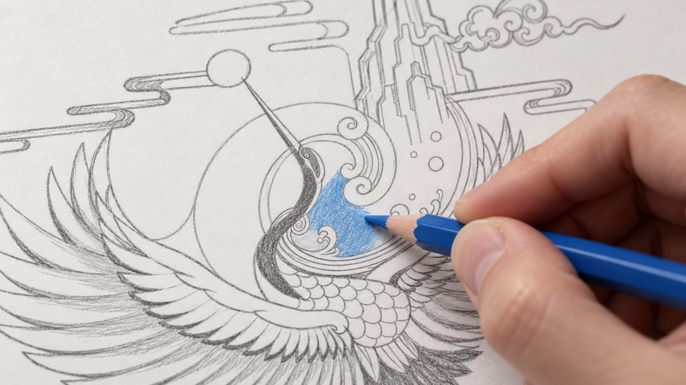

전체 화면 선택
V5 · 미완성 검토본
Veo 3.1 Quality · 1080p 업스케일 · 약 13초 · 무음
현재 생성본을 이어 붙인 검토용 영상입니다.
인물·앞치마·첫 선·첫 파란색·부분 채색·완성작 순서. 장면은 약 2초, 엔딩은 약 3.8초이며 짧은 디졸브로 연결했습니다.
다음 수정: 자연스러운 인물 동작, 연필 끝과 선·색 생성 위치 일치, 첫 장면의 고정된 시선과 절제된 표정, 각도 변화 없는 직선 확대 엔딩. 현재 영상은 이 문제들이 해결된 최종본이 아닙니다.
영상만 보기1080p MP4 다운로드편집 정보 JSON생성 프롬프트 JSON
기존 V1~V4는 보존했습니다. 각 홈페이지 시안에서 키보드 ←/→ 또는 모바일 좌우 스와이프로 영상만 바뀝니다. 작품은 제공 원본을 참고한 AI 재현이며 세부 선과 글자 모양이 원본과 완전히 같지는 않습니다.
01 · 인물 클로즈업

02 · 앞치마 착용

03 · 연필 첫 선

04 · 첫 파란색

05 · 부분 채색

06 · 완성작 엔딩